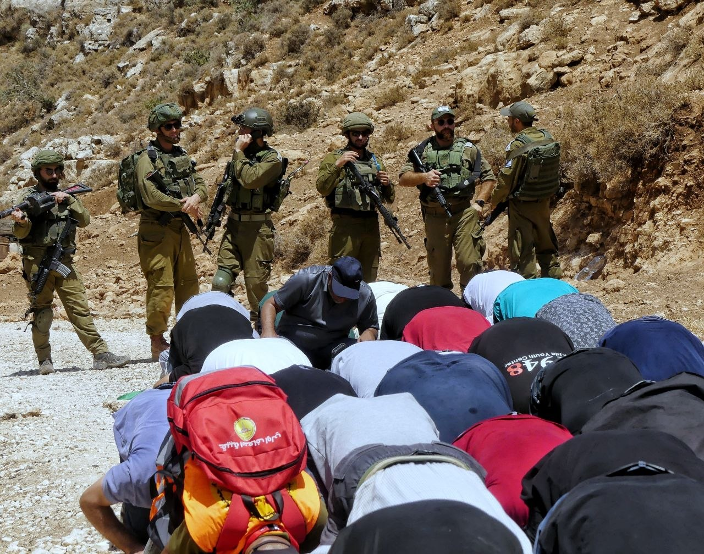

Several groups of activists gather near Beit Dajan to protest against an Israeli settlement outpost, as occupation forces repress the demonstration with brute force, tear gas, and stun grenades.
It is a scorching August day. The demonstration congregates in a mountain valley where Palestinians and international activists unite against yet another settlement consuming Palestinian territory. Settlers build outposts while exerting violence to force Palestinians out—demolishing homes, seizing vehicles, and burning mosques.
Yet it is a peaceful protest. People of all ages attend, from children to the elderly. Television crews and reporters are also present. Behind them, prayer rugs are spread out, though no one knows if they will be permitted to pray. A squad of nearly ten soldiers armed with assault rifles awaits.

Everyone waits attentively, holding Palestinian flags while debating whether prayer on their own soil will be allowed. Several calls are made, and only upon authorization does prayer commence. They kneel upon the rugs. Devotion fills their chants and speeches. Behind them, soldiers stand with rifles slung over shoulders, conferring over radios.
.jpg)
When prayer concludes, protesters hold aloft flags and banners. Tension escalates as soldiers form a firing line. Without warning, the first stun grenade detonates.
Multiple concussion grenades explode around the demonstrators, generating deafening blasts. Thick clouds of tear gas envelope the valley, forcing people to flee in reverse. Protesters cover their faces with keffiyehs and shirts as skin, eyes, and lungs burn from the toxic chemicals.
The demonstration disperses as people retreat. But the systemic repression they stood against has been relentless since 1948.